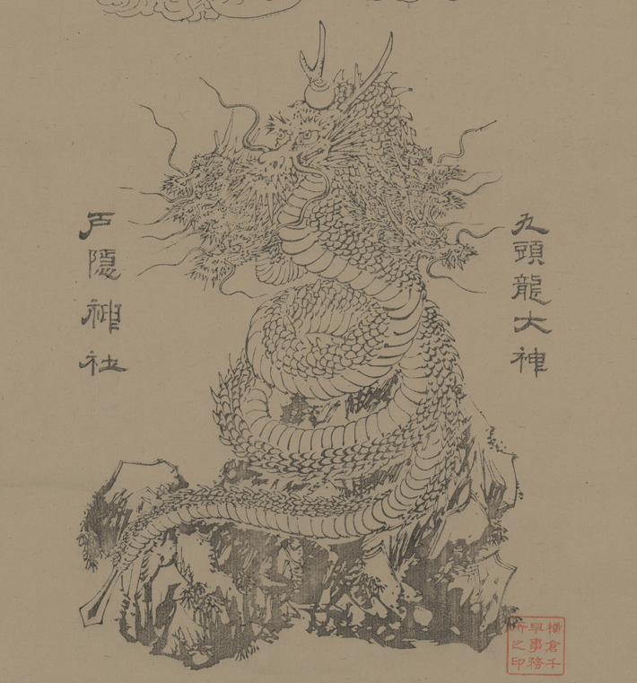

竜；リュウ，九頭龍；クズリュウ

戸隠神社の祭神である九頭龍大神。岩の上に巻きつき、頭をもたげている。頭は９つあり、中央の頭には宝珠を乗せている。
出典：親書誌：U426_nichibunken_0312：[戸隠神社図]；トガクシ ジンジャ ズ／日付：2014／資源識別子：U426_nichibunken_0312_0001_0000
Copyright (c)2010- International Research Center for Japanese Studies, Kyoto, Japan. All rights reserved.